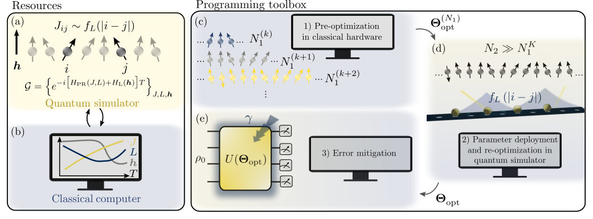
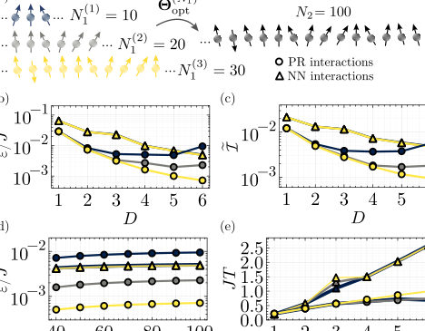
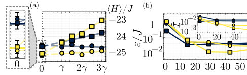

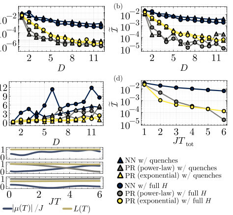
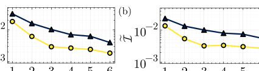
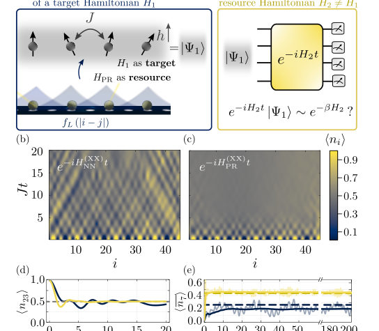
81 papers · 49 relevant · 2 highlighted
Every paper with at least one nonzero topic score, sorted by best-matching score. 🔥 marks scores ≥3/5. Click the title to jump to the full entry below; click [arXiv] to open the paper page. (secondary) marks papers from de-prioritized cond-mat archives.
measurement-induced transitions 5/5 · 🔥 entanglement & information structure 4/5 · 🔥 driven-dissipative phase transition 3/5 · 🔥 non-equilibrium dynamics 3/5 · 🔥 non-equilibrium universality 3/5 · correlated / nonlocal dissipation 2/5 · dissipative systems 2/5 · methods for driven-dissipative 2/5 · quantum measurements 2/5Rydberg arrays 5/5 · 🔥 analog quantum simulation 4/5 · 🔥 exotic spin models in light-matter 4/5 · 🔥 QC/QI experiment 3/5 · entanglement & information structure 2/5 · non-equilibrium dynamics 2/5 · quantum measurements 2/5dissipative systems 4/5 · 🔥 entanglement & information structure 4/5 · 🔥 driven-dissipative phase transition 3/5 · correlated / nonlocal dissipation 2/5 · methods for driven-dissipative 2/5 · non-equilibrium dynamics 2/5 · non-equilibrium universality 2/5dissipative systems 4/5 · 🔥 correlated / nonlocal dissipation 3/5 · 🔥 entanglement & information structure 3/5 · Tavis-Cummings & cavity-many-emitter 2/5 · methods for driven-dissipative 2/5 · non-equilibrium dynamics 2/5 · quantum measurements 2/5analog quantum simulation 4/5 · 🔥 Rydberg arrays 3/5 · 🔥 exotic spin models in light-matter 3/5 · 🔥 non-equilibrium dynamics 3/5 · entanglement & information structure 2/5 · scars & prethermalization 2/5methods for driven-dissipative 4/5 · 🔥 dissipative systems 3/5 · 🔥 entanglement & information structure 3/5 · correlated / nonlocal dissipation 2/5 · measurement-induced transitions 2/5 · quantum measurements 2/5dissipative systems 4/5 · 🔥 non-equilibrium dynamics 4/5 · 🔥 Keldysh / 2PI / non-Gaussian methods 3/5 · 🔥 non-equilibrium universality 3/5 · methods for driven-dissipative 2/5dissipative systems 4/5 · 🔥 methods for driven-dissipative 4/5 · 🔥 Kondo & dissipative impurity 3/5 · 🔥 non-equilibrium dynamics 3/5 · entanglement & information structure 2/5dissipative systems 4/5 · 🔥 Keldysh / 2PI / non-Gaussian methods 3/5 · 🔥 non-equilibrium dynamics 3/5 · correlated / nonlocal dissipation 2/5 · methods for driven-dissipative 2/5methods for driven-dissipative 4/5 · 🔥 Keldysh / 2PI / non-Gaussian methods 3/5 · 🔥 dissipative systems 3/5 · 🔥 non-equilibrium dynamics 3/5dissipative systems 4/5 · 🔥 entanglement & information structure 3/5 · correlated / nonlocal dissipation 2/5 · methods for driven-dissipative 2/5 · non-equilibrium dynamics 2/5spintronics-quantum-optics interface 4/5 · 🔥 correlated / nonlocal dissipation 3/5 · 🔥 dissipative systems 3/5 · quantum measurements 2/5quantum measurements 4/5 · 🔥 dissipative systems 3/5 · 🔥 non-equilibrium dynamics 3/5 · methods for driven-dissipative 2/5dissipative systems 4/5 · 🔥 non-equilibrium dynamics 3/5 · correlated / nonlocal dissipation 2/5 · methods for driven-dissipative 2/5dissipative systems 4/5 · 🔥 methods for driven-dissipative 4/5 · non-equilibrium dynamics 2/5QC/QI experiment 4/5 · dissipative systems 2/5 · quantum optics experiment 2/5non-equilibrium dynamics 4/5 · analog quantum simulation 2/5 · non-equilibrium universality 2/5Tavis-Cummings & cavity-many-emitter 4/5 · dissipative systems 2/5 · quantum measurements 2/5dissipative systems 4/5 · methods for driven-dissipative 2/5 · non-equilibrium dynamics 2/5quantum measurements 4/5 · entanglement & information structure 2/5QC/QI experiment 4/5(secondary) — 🔥 QC/QI experiment 4/5(secondary) — 🔥 dissipative systems 3/5 · 🔥 non-equilibrium dynamics 3/5 · correlated / nonlocal dissipation 2/5 · driven-dissipative phase transition 2/5 · methods for driven-dissipative 2/5 · non-equilibrium universality 2/5driven-dissipative phase transition 3/5 · 🔥 non-equilibrium dynamics 3/5 · 🔥 non-equilibrium universality 3/5 · dissipative systems 2/5 · methods for driven-dissipative 2/5driven-dissipative phase transition 3/5 · 🔥 non-equilibrium universality 3/5 · Keldysh / 2PI / non-Gaussian methods 2/5 · dissipative systems 2/5 · non-equilibrium dynamics 2/5dissipative systems 3/5 · entanglement & information structure 2/5 · methods for driven-dissipative 2/5 · non-equilibrium dynamics 2/5 · quantum measurements 2/5(secondary) — 🔥 non-equilibrium dynamics 3/5 · Keldysh / 2PI / non-Gaussian methods 2/5 · dissipative systems 2/5 · methods for driven-dissipative 2/5non-equilibrium dynamics 3/5 · correlated cavity matter 2/5 · driven-dissipative phase transition 2/5 · non-equilibrium universality 2/5entanglement & information structure 3/5 · dissipative systems 2/5 · quantum measurements 2/5entanglement & information structure 3/5 · dissipative systems 2/5quantum measurements 3/5 · analog quantum simulation 2/5QC/QI experiment 3/5entanglement & information structure 3/5Keldysh / 2PI / non-Gaussian methods 2/5 · dissipative systems 2/5 · methods for driven-dissipative 2/5 · non-equilibrium dynamics 2/5dissipative systems 2/5 · entanglement & information structure 2/5 · quantum measurements 1/5(secondary) — analog quantum simulation 2/5 · non-equilibrium dynamics 2/5methods for driven-dissipative 2/5 · non-equilibrium dynamics 2/5entanglement & information structure 2/5 · quantum measurements 2/5correlated cavity matter 2/5(secondary) — spintronics-quantum-optics interface 2/5Keldysh / 2PI / non-Gaussian methods 2/5Keldysh / 2PI / non-Gaussian methods 2/5(secondary) — spintronics-quantum-optics interface 2/5spintronics-quantum-optics interface 2/5(secondary) — Keldysh / 2PI / non-Gaussian methods 2/5(secondary) — spintronics-quantum-optics interface 2/5(secondary) — QC/QI experiment 2/5Keldysh / 2PI / non-Gaussian methods 2/5exotic spin models in light-matter 2/5Papers by authors on your watch list. Click the title to jump to the full entry below; click [arXiv] to open the paper page.
Papers from quant-ph and your primary cond-mat archives (quant-gas, stat-mech, str-el, dis-nn). Highlighted papers (⭐) come first, then everything else sorted by topic-relevance score, highest first.
Highlighted author(s): Susanne F. Yelin
Authors: Abigail McClain Gomez, Fiona Abney-McPeek, Hong-Ye Hu, Susanne F. Yelin, Ceren B. Dağ
Type: theory · Category: statistical mechanics · PDF: https://arxiv.org/pdf/2604.22022v1
Analysis basis: full PDF text, analyzed in chunks
Topic relevance: 🔥 measurement-induced transitions 5/5 · 🔥 entanglement & information structure 4/5 · 🔥 driven-dissipative phase transition 3/5 · 🔥 non-equilibrium dynamics 3/5 · 🔥 non-equilibrium universality 3/5 · correlated / nonlocal dissipation 2/5 · dissipative systems 2/5 · methods for driven-dissipative 2/5 · quantum measurements 2/5
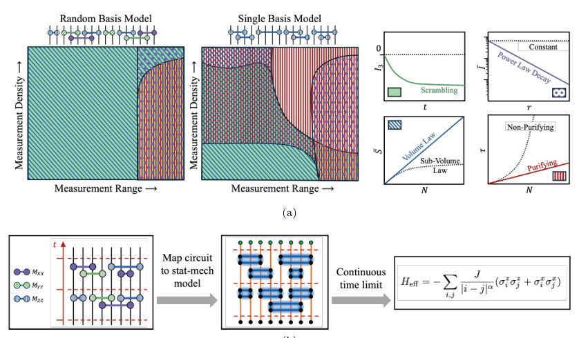
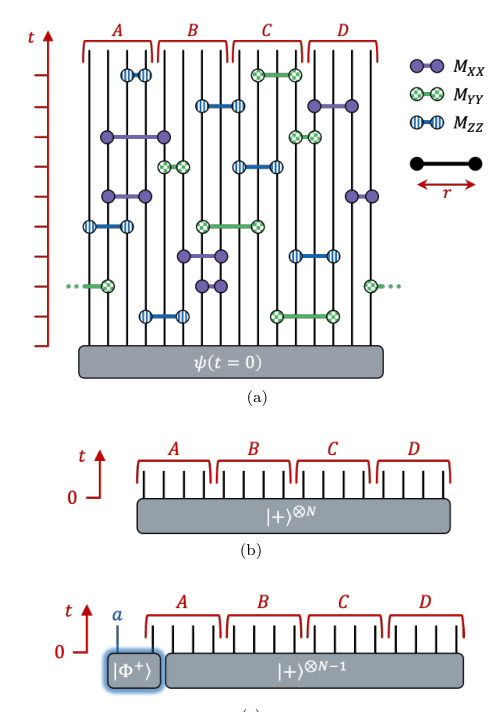
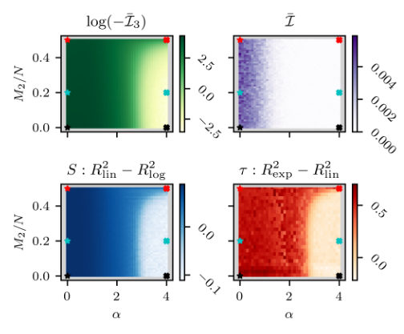
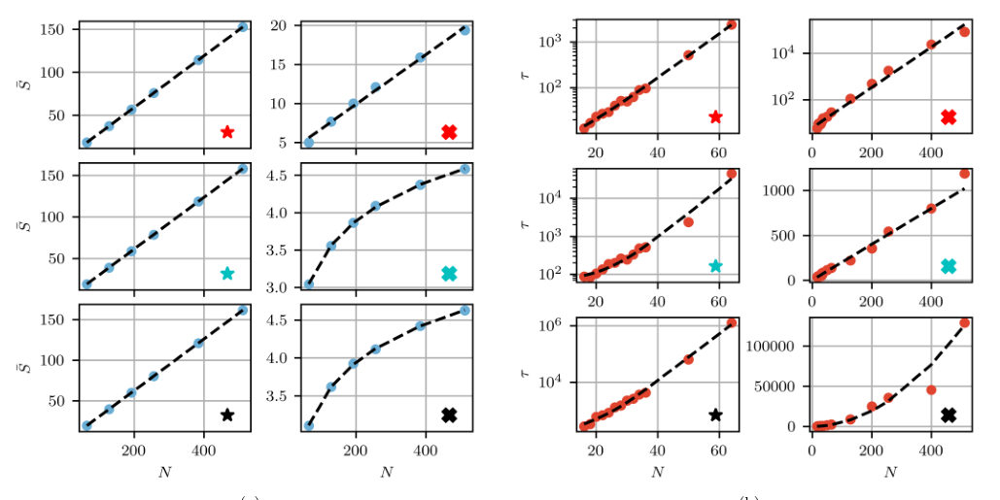
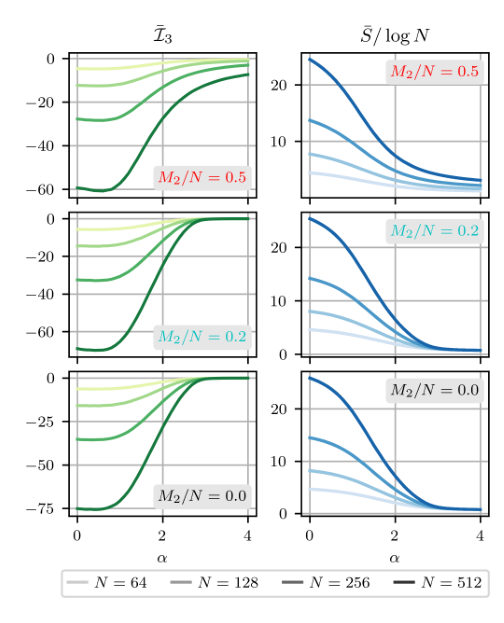
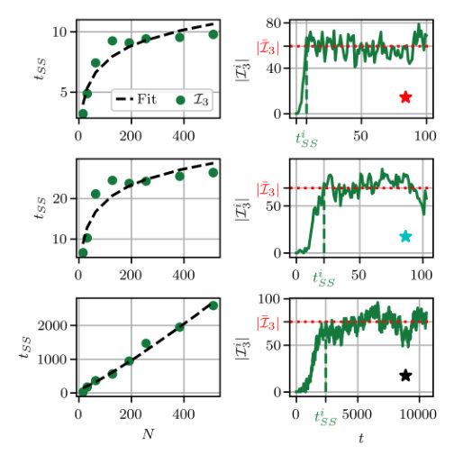
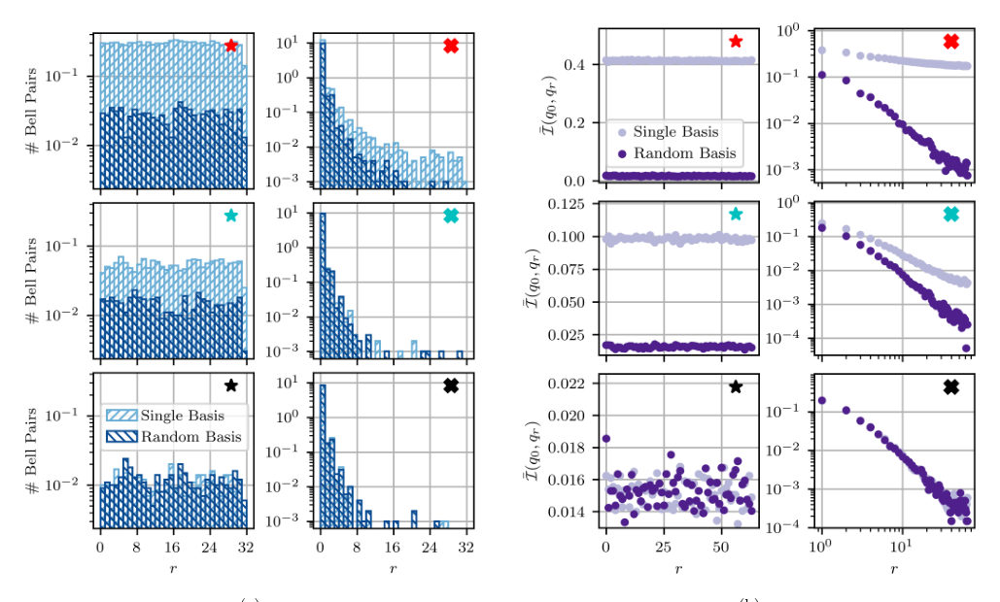
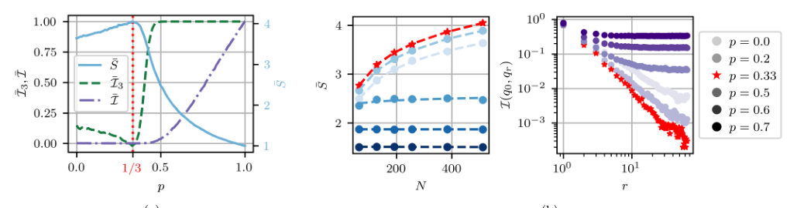
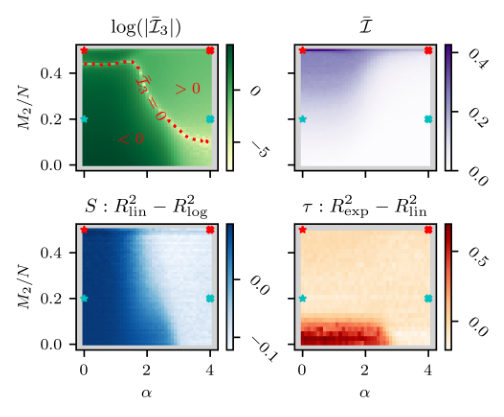
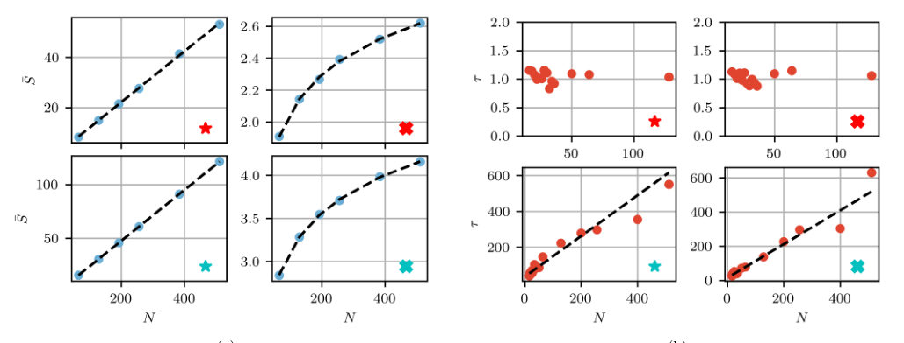
Main problem. Investigating how the range, density, and structure of measurements jointly shape entanglement, information scrambling, and purification in measurement-only circuits.
Main result. The study identifies a rich phase diagram including a novel phase with volume-law entanglement but no scrambling, and establishes a theoretical mapping between the circuit's steady state and a long-range XX Hamiltonian.
Method. Large-scale Clifford stabilizer simulations combined with a replica-based method that maps the 1+1D circuit to a 2D statistical mechanics model.
Summary. This paper explores the entanglement and information dynamics in 1D measurement-only circuits with long-range interactions. By using Clifford simulations and a statistical mechanics mapping, the authors uncover various phases characterized by different entanglement scaling and scrambling properties. Notably, they find a regime in dense, single-basis circuits where volume-law entanglement exists without information scrambling, alongside rapid purification. This discovery suggests a promising method for the efficient preparation of robust, highly entangled quantum resource states.
Model / system. One-dimensional measurement-only Clifford circuits with two-qubit parity checks (XX, YY, ZZ) featuring power-law decaying interaction ranges.
Key observables. Entanglement entropy (volume-law, sub-volume law, area-law), tripartite mutual information (scrambling diagnostic), mutual information, and purification timescale.
Important parameters / regimes. Measurement range (alpha), measurement density per layer, and measurement basis structure (random-basis vs. single-basis).
Assumptions / limitations. Single-qubit Clifford gates are approximated by Haar-averaged unitaries; periodic boundary conditions are assumed.
Figures summary. Schematic phase diagrams for different protocols; a diagram illustrating the mapping to a 2D statistical mechanics model; and plots showing the spatial profiles of entanglement, mutual information, and tripartite mutual information.
Paper structure. The paper introduces measurement-only circuits, develops a statistical mechanics mapping for random-basis models, presents phase diagrams for both random and single-basis protocols, explores the effective XX Hamiltonian connection, and discusses the implications for state preparation.
Why it may be interesting. It provides a deep connection between measurement-induced phase transitions and classical statistical mechanics, while identifying a regime for efficient, non-scrambling preparation of highly entangled states.
Measurement-only circuits provide a minimal setting in which repeated local projections can either generate or suppress many-body entanglement, giving rise to measurement-induced phase transitions and dynamical regimes, that might have no unitary counterpart. Here we investigate entanglement and information transitions in one-dimensional measurement-only Clifford circuits with long-range two-qubit parity checks. By tuning both the measurement range and density per layer, we uncover a broad set of phases whose classification requires probes beyond entanglement entropy, such as mutual information, tripartite mutual information, purification from an ancilla, and Bell-cluster statistics. We map phase diagrams using large-scale Clifford simulations for two protocols: a random-basis design in which each measurement is randomly chosen from $\lbrace XX,YY,ZZ \rbrace$, and a single-basis design in which the basis is fixed within each layer but varies between layers, hence introducing more structure to the circuit. We map the trajectory-averaged entanglement entropy to a two-dimensional statistical mechanics model by extending a replica-based method to random-basis measurement-only circuits, and show that a continuous-time limit yields an effective long-range XX hamiltonian in the steady state. This connection links the observed volume-law to sub-volume-law entanglement transition to the boundary between a continuous symmetry broken phase and a critical XY phase. Strikingly, in structured (single-basis) circuits we find a phase in which volume-law and long-range entanglement coexists with rapid, size-independent purification of an ancilla qubit, and the absence of scrambling, highlighting measurement-only circuits as a promising route to efficiently preparing highly entangled and technologically useful quantum states.
Highlighted author(s): Giovanna Morigi
Authors: Sangyun Lee, Yehor Tuchkov, Alexander P. Antonov, Benno Liebchen, Hartmut Löwen, Giovanna Morigi, Michael te Vrugt
Type: theory · Category: statistical mechanics · PDF: https://arxiv.org/pdf/2604.22600v1
Analysis basis: full PDF text, analyzed in chunks
Topic relevance: 🔥 dissipative systems 4/5 · 🔥 non-equilibrium dynamics 4/5 · 🔥 Keldysh / 2PI / non-Gaussian methods 3/5 · 🔥 non-equilibrium universality 3/5 · methods for driven-dissipative 2/5
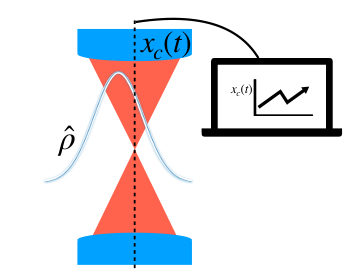
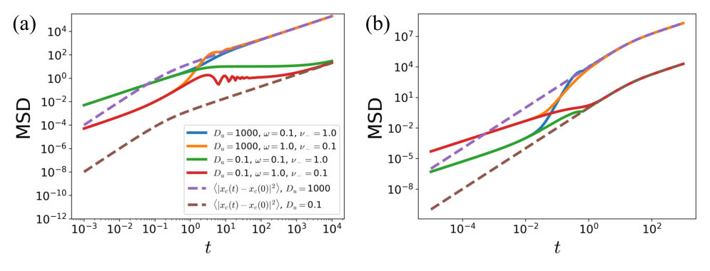
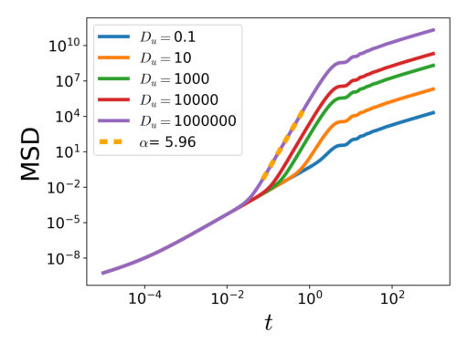
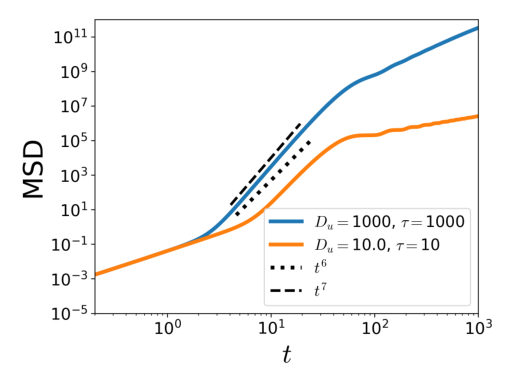
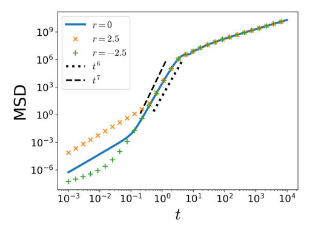
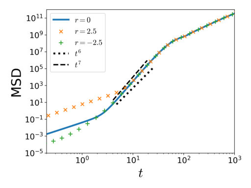
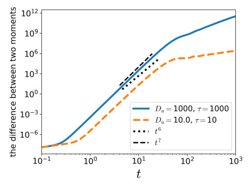
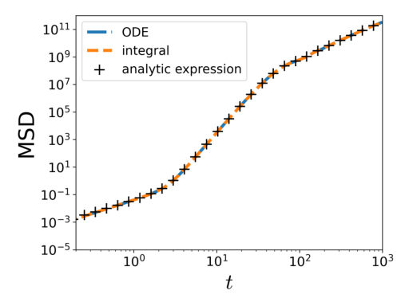
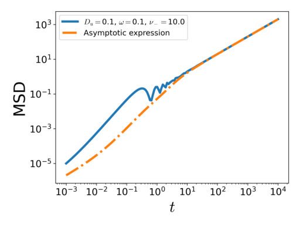
Main problem. The paper investigates the extension of active matter concepts to the quantum regime, specifically focusing on the emergence and robustness of anomalous power-law scaling in the Mean-Squared Displacement (MSD).
Main result. The authors identify specific conditions for $t^6$ and $t^7$ anomalous scaling regimes in quantum active matter and demonstrate that these behaviors are robust against different initial quantum states.
Method. A hybrid Wigner phase-space framework is developed, utilizing a hybrid Wigner master equation and the Moyal product to map quantum dynamics onto a quasiclassical Langevin equation.
Summary. This paper explores how the principles of active matter—systems driven out of equilibrium by local energy influx—apply to quantum systems. By using a Wigner phase-space approach, the authors show that quantum active matter can exhibit much faster, anomalous diffusion (scaling as $t^6$ or $t^7$) than classical active matter. They demonstrate that these high-order power-law growths are robust and depend on the interplay between quantum fluctuations and the persistence of the active noise. This work establishes a new framework for studying non-equilibrium dynamics in quantum-controlled environments.
Model / system. A quantum harmonic oscillator coupled to an Active Ornstein-Uhlenbeck Process (AOUP), where the trap center follows a classical stochastic trajectory driven by active noise.
Key observables. Mean-Squared Displacement (MSD) and two-time correlation functions.
Important parameters / regimes. Persistence time ($ au$), activity strength ($D_u$), harmonic frequency ($\omega$), dissipation/pumping rates ($ u_-, u_+$), and the squeezing parameter ($r$).
Assumptions / limitations. The mapping to a Langevin equation assumes the Wigner master equation is quadratic in derivatives and the initial condition is Gaussian; the $t^7$ scaling is found under specific initial conditions.
Figures summary. Figure 2 shows MSD trajectories for different persistence times; Figure 3 demonstrates $t^6$ scaling; Figure 7 compares different MSD definitions to show stability; Figure 8 compares three different numerical/analytical methods for calculating MSD; Figure 9 compares exact MSD results with asymptotic forms.
Paper structure. The paper introduces the problem of quantum active matter, develops a hybrid Wigner phase-space framework, derives the master equation and its quasiclassical Langevin mapping, analyzes specific scaling regimes ($t^6, t^7$) and oscillatory dynamics, examines the impact of initial state squeezing, and provides mathematical proofs for the Moyal product and expectation value equivalence in the appendices.
Why it may be interesting. It provides a rigorous theoretical bridge between classical active matter and open quantum systems, offering new insights into how non-equilibrium driving can lead to extreme anomalous diffusion in quantum-controlled systems like optical tweezers.
Active matter is driven out of equilibrium by a local influx of energy. While classical active matter has been extensively studied, the extension of active matter concepts to quantum systems has been explored far less. In this work we develop a full quantum description based on the Wigner function. By introducing a hybrid Wigner master equation that incorporates classical active motion and quantum degrees of freedom, we compute the quantum mean-squared displacement (MSD) using established techniques from classical active matter. We analytically derive the time dependence of the MSD and clarify the conditions under which the characteristic scaling with time $\mathrm{MSD}\sim t^{6}$ emerges. We further show that, for certain parameter and initial conditions, the MSD can exhibit an even steeper scaling regime $\mathrm{MSD}\sim t^{7}$, and we examine the robustness of these behaviors against quantum fluctuations of the initial state.
Authors: Erik Fitzner, Igor Lesanovsky, Björn Sbierski
Type: both · Category: other · PDF: https://arxiv.org/pdf/2604.22743v1
Analysis basis: full PDF text, analyzed in chunks
Topic relevance: 🔥 Rydberg arrays 5/5 · 🔥 analog quantum simulation 4/5 · 🔥 exotic spin models in light-matter 4/5 · 🔥 QC/QI experiment 3/5 · entanglement & information structure 2/5 · non-equilibrium dynamics 2/5 · quantum measurements 2/5
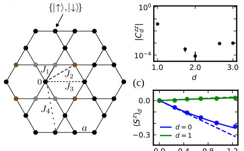
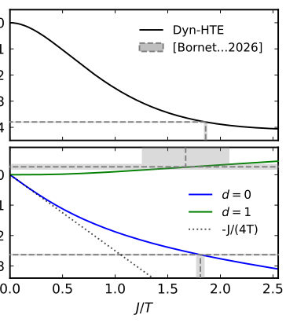
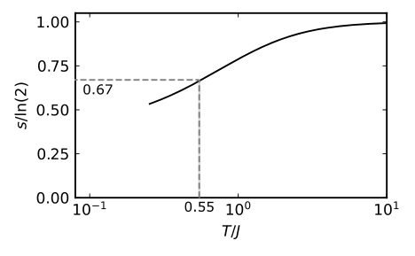
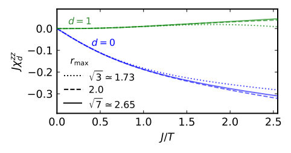
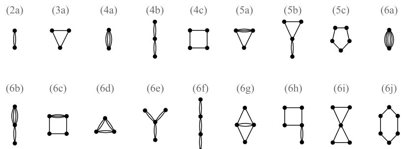
Main problem. Developing an accurate thermometry protocol to determine temperature and entropy in Rydberg atom tweezer arrays, specifically for frustrated Kagome lattice systems where traditional numerical methods like QMC suffer from the sign problem.
Main result. The study estimates a temperature of T=0.55J and entropy of S/N=0.67 ln2, concluding that current experimental temperatures are too high to reach the predicted quantum spin liquid regime.
Method. A combination of experimental measurements of correlations and local susceptibility with a theoretical Dynamic High-Temperature Expansion (Dyn-HTE) up to 8th order.
Summary. This paper proposes a new method for measuring temperature and entropy in Rydberg atom quantum simulators. By combining experimental spin correlations with a high-temperature expansion theory, the authors analyze a Kagome lattice experiment. They find that the current experimental temperature is significantly higher than what is needed to observe quantum spin liquid physics. This work provides a way to quantify how close experimental platforms are to highly entangled quantum phases.
Model / system. An anti-ferromagnetic dipolar spin-1/2 XY model realized on a 2D Kagome lattice of 114 Rubidium-87 atoms in Rydberg tweezer arrays.
Key observables. Nearest-neighbor equal-time zz correlator (Czz1), local zz spin susceptibility (zz0), and distance-resolved static zz susceptibility (zzd).
Important parameters / regimes. Coupling strength J approx 2pi x 0.77 MHz, nearest-neighbor distance a = 12 micrometers, and interaction decay 1/r^3.
Assumptions / limitations. The system is in a thermal state; the interaction is truncated to a 4th-nearest neighbor model for theoretical calculations; use of Padé approximants for series convergence.
Figures summary. Fig 2 shows experimental correlators and susceptibilities compared to theoretical predictions; Fig 3 displays entropy per spin as a function of temperature; Fig 4 shows convergence tests for interaction truncation; Fig 5 illustrates the diagrammatic expansion graphs.
Paper structure. The paper introduces the thermometry challenge, describes the Kagome Rydberg platform and XY model, details the Dyn-HTE method and expansion orders, presents temperature and entropy results, and concludes with implications for reaching the QSL regime.
Why it may be interesting. It provides a critical diagnostic tool (thermometry) for Rydberg simulators and addresses the fundamental difficulty of characterizing thermalization and entropy in frustrated quantum many-body systems.
We propose an accurate thermometry approach for Rydberg atom tweezer arrays combining data from correlation and local susceptibility measurements with a theoretical high-temperature expansion method for dynamic spin correlations. We apply our approach to a recent quantum simulation experiment [Bornet et al., arXiv 2602.14323] realizing an anti-ferromagnetic dipolar spin-1/2 XY model on the Kagome lattice. We obtain T=0.55J and S/N=0.67 ln2 for temperature and entropy respectively, showing that further experimental efforts are required to reach the putative quantum spin liquid regime.
Authors: Keisuke Kataoka, Yoshihito Kuno, Takahiro Orito, Ikuo Ichinose
Type: theory · Category: quantum information and computing · PDF: https://arxiv.org/pdf/2604.22521v1
Analysis basis: full PDF text, analyzed in chunks
Topic relevance: 🔥 dissipative systems 4/5 · 🔥 entanglement & information structure 4/5 · 🔥 driven-dissipative phase transition 3/5 · correlated / nonlocal dissipation 2/5 · methods for driven-dissipative 2/5 · non-equilibrium dynamics 2/5 · non-equilibrium universality 2/5
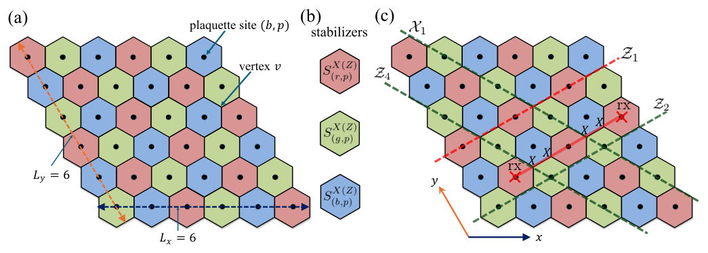
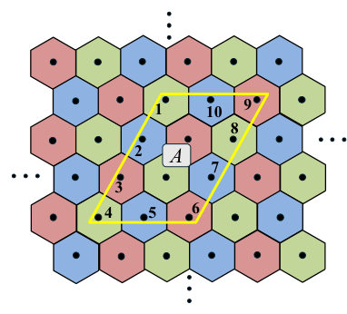
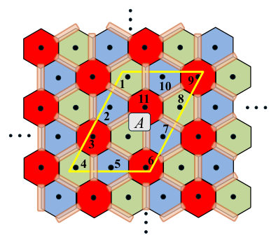
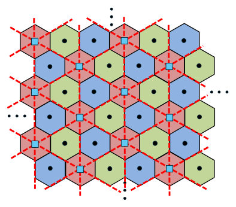
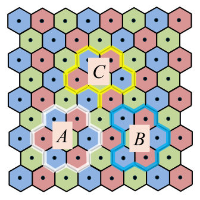
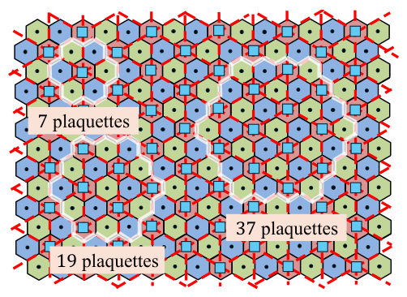
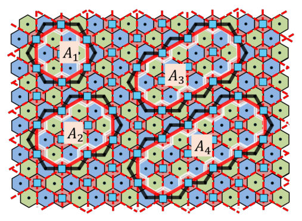
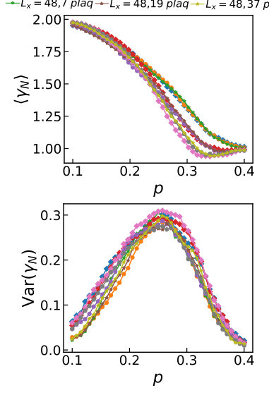
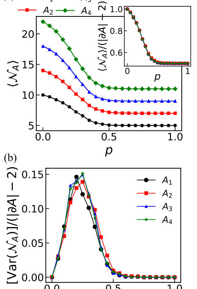
Main problem. The study investigates how local decoherence transforms a color code into an intrinsic mixed-state topological order (imTO) and seeks to characterize this transition using entanglement diagnostics.
Main result. The authors demonstrate that the decohered color code emerges as a mixed toric code, characterized by a smooth crossover in topological entanglement negativity (TEN) from 2 ln 2 to ln 2, and show that TEN is a stable, shape-independent observable for such transitions.
Method. The researchers use the stabilizer formalism and the Gottesman-Aaronson algorithm for large-scale numerical simulations, combined with an analytical 'gauging out' procedure to identify the emergent anyon theory.
Summary. This paper explores how local noise affects the topological properties of the color code. It shows that decoherence leads to the emergence of a mixed-state toric code through the proliferation of anyons. By using topological entanglement negativity (TEN), the authors demonstrate that this transition is a smooth crossover rather than a sharp phase transition. They also prove that TEN is a robust and stable measure for tracking topological evolution in noisy systems.
Model / system. The system is a 2D color code on a honeycomb lattice on a torus, subjected to a stochastic XX-type decoherence channel acting on the red links of the lattice.
Key observables. Topological entanglement negativity (TEN), entanglement negativity, logarithmic purity, and anyon content/proliferation.
Important parameters / regimes. Decoherence strength (p), system size (Lx, Ly), and subsystem geometry (hexagonal partitions).
Assumptions / limitations. The analysis assumes an Abelian theory for defining the quotient group and focuses on the specific XX-type decoherence model.
Figures summary. Figures illustrate the honeycomb lattice and color scheme, the process of anyon creation via decoherence, the emergence of the triangular lattice, and numerical plots showing the smooth decrease of TEN and the peak in its variance during the crossover.
Paper structure. The paper introduces the color code decoherence model, analytically describes the emergence of the mixed toric code via anyon proliferation, presents numerical simulations of the transition using TEN, and concludes with a stability analysis of the TEN observable.
Why it may be interesting. This paper is highly relevant for researchers in open quantum systems as it provides a new diagnostic tool (TEN) to identify and characterize topological order in the presence of noise, specifically studying the transition from pure to mixed-state topological order.
We study how the color code under decoherence gives rise to an intrinsic mixed-state topological order (imTO), which has no counterpart in pure ground states of local gapped Hamiltonians. For decoherence induced by XX-type operators on red links of the honeycomb lattice, we show that the resulting mixed state inherits half of the topological properties of the color code, including anyon content, logical operators, and topological entanglement structure. Using a gauging procedure for mixed stabilizer states, we identify the emergent phase as closely related to a single toric code. We characterize this phase by topological entanglement negativity (TEN) and perform efficient stabilizer-formalism simulations. While the pure color code has ${\rm TEN} = 2 \ln 2$, the maximally decohered state has ${\rm TEN} = \ln 2$, indicating emergence of a single toric code. By tuning the decoherence strength, we find a smooth crossover in TEN accompanied by a pronounced, nearly system-size-independent peak in its variance. We further show that the negativity exhibits characteristic scaling only for subsystem partitions commensurate with the triangular lattice of the emergent toric code. Our results demonstrate that negativity-based quantities provide powerful probes of mixed-state topological order generated by decoherence.
Authors: Xin Zhou, Francesco Massel
Type: theory · Category: other · PDF: https://arxiv.org/pdf/2604.22500v1
Analysis basis: full PDF text, analyzed in chunks
Topic relevance: 🔥 dissipative systems 4/5 · 🔥 correlated / nonlocal dissipation 3/5 · 🔥 entanglement & information structure 3/5 · Tavis-Cummings & cavity-many-emitter 2/5 · methods for driven-dissipative 2/5 · non-equilibrium dynamics 2/5 · quantum measurements 2/5
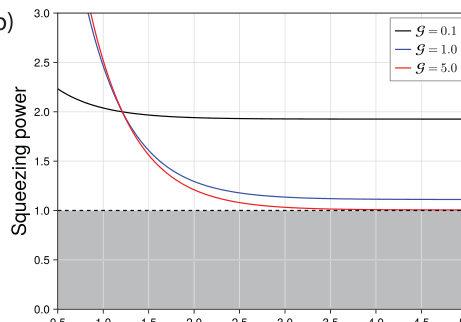
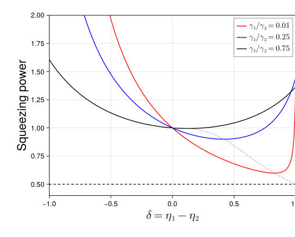
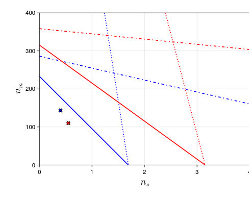
Main problem. Determining the fundamental quantum limits on the amount of squeezing achievable in bosonic networks subject to canonical commutation relations and stability constraints.
Main result. The authors establish that for purely dissipative two-mode squeezing, the sum of normalized quadrature variances is bounded below by 1, but this bound can approach 1/2 when local parametric driving is added.
Method. The study uses input-output theory, Bogoliubov transformations, and the Lyapunov equation to analyze the 'commutator budget' and noise-gain balance in linear time-invariant quantum systems.
Summary. This paper investigates the fundamental limits on how much squeezing can be achieved in networks of bosonic modes. It demonstrates that the canonical commutation relations and system stability impose a strict 'noise budget' that prevents infinite squeezing. While purely dissipative schemes have a lower bound of 1 for normalized squeezing power, adding parametric driving can lower this limit toward 1/2. These findings are directly applicable to improving the performance of electromechanical and nanomechanical quantum sensors.
Model / system. A network of N bosonic modes (such as cavity optomechanics or electromechanics) coupled to external Markovian baths, including specific models for two-mode and three-mode systems.
Key observables. Steady-state quadrature variances, squeezing power (sum of normalized mode-optimal quadrature variances), and the Duan inseparability criterion.
Important parameters / regimes. Strong-coupling limit, stability region, transfer parameter (eta_e), and the presence of degenerate parametric driving.
Assumptions / limitations. The framework assumes Markovian baths, linear time-invariant dynamics, and the rotating-wave approximation (RWA) for the three-mode description.
Figures summary. Figure 1 shows squeezing power as a function of coupling and parameters; Figure 2 shows squeezing power as a function of the difference in parametric driving strengths.
Paper structure. The paper introduces the problem of squeezing limits, develops a mathematical framework based on commutation relations, analyzes two-mode and three-mode systems, and discusses experimental implications.
Why it may be interesting. It provides fundamental, model-independent bounds on squeezing and entanglement based on the algebraic structure of quantum mechanics, which is highly relevant to the control of open quantum systems and optomechanical networks.
In our work, we show how, for a network of bosonic modes, canonical commutation relations constrain the coefficients relating input and internal modes. Based on these constraints, we derive a lower bound on the total steady-state squeezing achievable in reservoir-engineered (dissipative) squeezing schemes, quantified by the sum of mode-optimal quadrature variances normalized to its corresponding input variance. The bound follows solely from canonical commutation relations and stability, and is saturated in the strong-coupling limit at 1. Furthermore, we show that adding independent parametric driving terms for each mode changes the quantum noise-gain balance and yields a distinct optimum bound, approaching 1/2. In addition, we show how these constraints allow us to reformulate the Duan inseparability criterion for a three-mode bosonic system in terms of a single parameter-dependent figure of merit. Our results apply directly to current electromechanical and nanomechanical experiments and indicate that the two-mode bounds can be experimentally approached even at room temperature.
Authors: Cristian Tabares, Alberto Muñoz de las Heras, Jan T. Schneider, Alejandro González-Tudela
Type: theory · Category: other · PDF: https://arxiv.org/pdf/2604.22483v1
Analysis basis: full PDF text, analyzed in chunks
Topic relevance: 🔥 analog quantum simulation 4/5 · 🔥 Rydberg arrays 3/5 · 🔥 exotic spin models in light-matter 3/5 · 🔥 non-equilibrium dynamics 3/5 · entanglement & information structure 2/5 · scars & prethermalization 2/5






Main problem. Analog quantum simulators are often limited by fixed-connectivity architectures and limited Hamiltonian tunability, which hinders efficient many-body state preparation and the study of complex dynamics.
Main result. The authors demonstrate that programmable long-range (PR) interactions significantly outperform nearest-neighbor architectures, providing orders-of-magnitude improvements in fidelity and energy estimation for systems up to 1000 particles.
Method. A hybrid classical-quantum toolbox using classical pre-compilation on small systems, iterative extrapolation to larger sizes, and quantum hardware-based re-optimization combined with Zero-Noise Extrapolation (ZNE).
Summary. This paper introduces a method to leverage programmable long-range interactions in analog quantum simulators to enhance many-body state preparation. By using a hybrid approach of classical pre-compilation and quantum re-optimization, the authors show that long-range connectivity allows for much higher fidelity and lower energy error compared to standard nearest-neighbor models. The strategy scales effectively to systems of up to 1000 particles and can be used to study complex phenomena like many-body thermalization. This approach turns interaction range into a powerful tool for next-generation quantum simulation.
Model / system. The study utilizes programmable-range Hamiltonians (exponential and power-law decay) applied to various models including the Transverse Field Ising Model (TFIM), Spin-1 Blume-Capel, Kitaev chains, and the Aubry-André-Harper (AAH) model, relevant to platforms like trapped ions, Rydberg atoms, and waveguide/cavity QED.
Key observables. Residual energy density, infidelity density, energy estimation, and many-body thermalization signatures (e.g., site occupation dynamics).
Important parameters / regimes. Interaction strength (J), spatial range (L), circuit depth (D), training size (N1), target system size (N2), and noise strength (gamma).
Assumptions / limitations. The work focuses on 1D models and assumes the scalability of the method to higher dimensions remains a subject for future testing; it also relies on the classical simulability of quadratic models for large-scale benchmarking.
Figures summary. Figure 1 shows the PR Hamiltonian resource; Figure 2 compares residual energy and infidelity for PR vs. NN architectures and demonstrates scalability; Figure 3 illustrates the ZNE and error-mitigation pipeline; Figure 4 shows Kitaev chain scaling and optimized control pulses; Figure 5 compares performance in the Spin-1 BC model; Figure 6 demonstrates thermalization dynamics under PR vs. NN quenches.
Paper structure. The paper defines the programmable-range resource, describes the hybrid optimization and pre-compilation toolbox, benchmarks scalability and performance across various spin and fermionic models, and concludes by demonstrating applications in studying many-body thermalization.
Why it may be interesting. It provides a powerful framework for using tunable long-range interactions as a control resource to break integrability, study thermalization, and achieve high-fidelity state preparation in large-scale analog simulators.
Long-range interactions are the source of many equilibrium and out-of-equilibrium quantum many-body phenomena. Analog simulators based on ionic, atomic, superconducting, and molecular systems provide a natural platform to obtain these interactions using vibration- and photon-mediated processes. Recent experimental advances, such as their integration in multi-mode cavities and waveguides, or the use of Raman-assisted transitions, enable dynamical control over both the strength and the spatial range of these interactions, thereby rendering them programmable. Here, we develop a hybrid classical-quantum toolbox that exploits this tunability to enhance many-body state preparation in analog simulators beyond fixed-connectivity architectures. Our approach is based on classical pre-compilation in homogeneous small systems, whose optimized parameters are extrapolated iteratively to larger system sizes, and then refined on the quantum hardware using noise-aware hybrid re-optimization and error-mitigation techniques. We benchmark this strategy across several fermionic, spin-1/2, and spin-1 models, demonstrating orders-of-magnitude improvements in fidelity and energy estimation for system sizes ranging from 100 to 1000 particles. Finally, we show that the combination of such high-fidelity programmable state preparation techniques with tunable-range out-of-equilibrium dynamics enables controlled studies of many-body thermalization in regimes accessible to current experimental platforms. Our results establish programmable long-range interactions as a powerful resource for next-generation analog quantum simulators.
Authors: Paul Aigner, Jasmin Matti, Maria Flors Mor-Ruiz, Julius Wallnöfer, Wolfgang Dür
Type: theory · Category: quantum information and computing · PDF: https://arxiv.org/pdf/2604.22588v1
Analysis basis: full PDF text, analyzed in chunks
Topic relevance: 🔥 methods for driven-dissipative 4/5 · 🔥 dissipative systems 3/5 · 🔥 entanglement & information structure 3/5 · correlated / nonlocal dissipation 2/5 · measurement-induced transitions 2/5 · quantum measurements 2/5
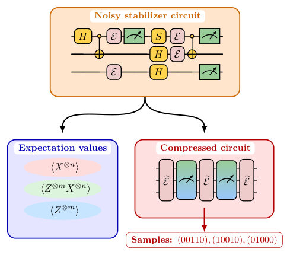
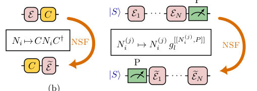
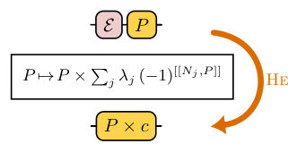
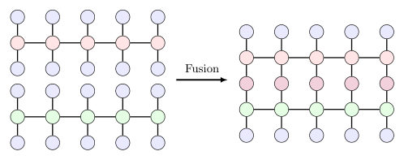
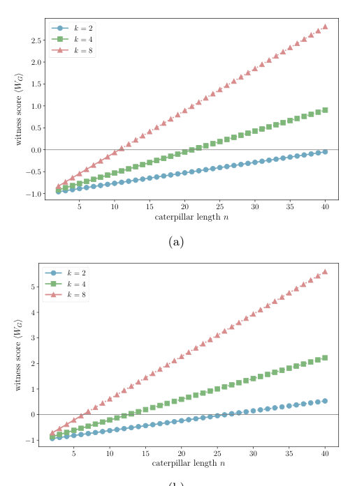
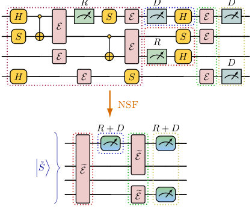
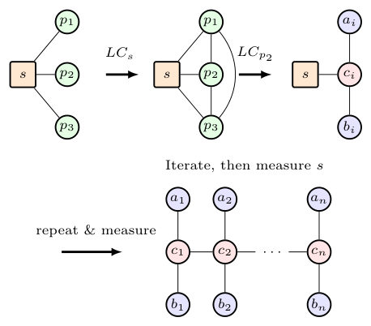
Main problem. The challenge of efficiently simulating large-scale noisy quantum circuits where the exponential overhead of density matrix propagation makes brute-force methods intractable.
Main result. The development of a unified framework for both strong (analytical) and weak (sampling-based) simulation of noisy stabilizer circuits, including an efficient circuit compression technique.
Method. The authors use an extension of the Noisy Stabilizer Formalism (NSF) to derive closed-form expressions for Pauli expectation values and introduce a compression algorithm that separates parameter-independent preprocessing from sampling.
Summary. This paper presents a new framework for the efficient simulation of noisy stabilizer circuits. It provides an analytical method to compute exact Pauli expectation values, allowing for efficient noise parameter sweeps without statistical error. Additionally, it introduces a circuit compression technique that speeds up sampling-based simulations by pre-processing the circuit. The framework is versatile enough to handle general rotations and non-diagonal noise, though complexity increases with deterministic measurements.
Model / system. Noisy stabilizer circuits consisting of Clifford gates, Pauli-diagonal noise channels, and both deterministic and non-deterministic Pauli measurements.
Key observables. Pauli expectation values, entanglement witnesses, reduced density matrices, Bell-inequality witnesses, and energy expectation values for Hamiltonians with polynomial Pauli terms.
Important parameters / regimes. Noise strengths (lambda), number of qubits (n), number of Clifford gates, number of noise channels, and the number of deterministic measurements (which controls the branching complexity).
Assumptions / limitations. The primary analytical results focus on Pauli-diagonal noise; the efficiency of the simulation decreases exponentially with the number of deterministic measurements and non-diagonal noise channels.
Figures summary. Figure 1 shows the three simulation regimes; Figure 2 illustrates the NSF update rules for gates and measurements; Figure 3 shows the Heisenberg action of noise; Figure 6 depicts the circuit compression methodology.
Paper structure. The paper introduces the problem of noisy simulation, defines the Noisy Stabilator Formalism (NSF) and its analytical (strong) simulation capabilities, presents a circuit compression framework for efficient sampling (weak simulation), extends the framework to more complex noise and measurements, and provides complexity analysis and optimization techniques.
Why it may be interesting. This work is highly relevant for researchers in open quantum systems and quantum optics as it provides powerful tools to study the impact of complex, correlated noise on quantum information protocols and entanglement properties without the cost of full density matrix simulation.
We develop analytical and algorithmic techniques that enable efficient simulation of a broad class of noisy stabilizer circuits. We derive closed-form expressions of expectation values for tensor product of Paulis in circuits with non-deterministic Pauli measurements, yielding an efficient strong simulation method that avoids explicit density matrix construction and enables direct noise parameter sweeps. We introduce a circuit compression framework that reduces the per-sample cost of weak simulation in general noisy stabilizer circuits, including deterministic measurements, by separating parameter-independent preprocessing from sampling. Finally, we extend the analytical framework beyond its standard domain to include a small number of deterministic measurements, general rotations, and non-diagonal noise channels. Our results provide a unified framework for both strong and weak simulation of noisy stabilizer circuits and corresponds to an extension of the noisy stabilizer formalism introduced in \cite{PhysRevA.107.032424}. They offer applications ranging from calculation of the expectation values of entanglement witnesses, determination of reduced states, to energy evaluation.
Authors: Tim Alhäuser, Heinz-Peter Breuer
Type: theory · Category: other · PDF: https://arxiv.org/pdf/2604.22010v1
Analysis basis: full PDF text, analyzed in chunks
Topic relevance: 🔥 dissipative systems 4/5 · 🔥 methods for driven-dissipative 4/5 · 🔥 Kondo & dissipative impurity 3/5 · 🔥 non-equilibrium dynamics 3/5 · entanglement & information structure 2/5
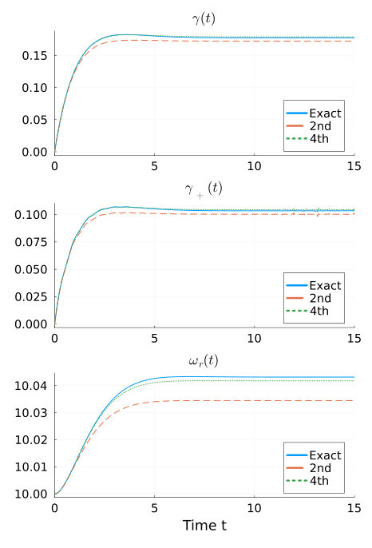
Main problem. Evaluating the performance, validity, and convergence of the time-convolutionless (TCL) perturbative expansion for describing non-Markovian quantum dynamics.
Main result. The authors identify a specific radius of convergence for the TCL expansion based on the ratio of detuning to spectral density width and demonstrate that while the 4th-order expansion is highly accurate, the expansion fails to capture complex non-Markovian features like information backflow in the strong-coupling regime.
Method. The study uses the analytically solvable Fano-Anderson model to compare exact master equation solutions against 2nd and 4th-order TCL perturbative expansions, utilizing Bures distance to quantify non-Markovianity.
Summary. This paper investigates the accuracy of the time-convolutionless (TCL) expansion method for open quantum systems using the Fano-Anderson model. It establishes that the expansion's convergence depends on the ratio of detuning to the spectral density width. While the 4th-order expansion provides excellent agreement with exact dynamics in weak coupling, it fails to capture essential non-Markovian features like information backflow in the strong-coupling regime. The study also highlights how temperature influences the asymmetry of non-Markovianity.
Model / system. A continuous variable system (harmonic oscillator) coupled to a bosonic bath with a Lorentzian spectral density, described by a Hamiltonian that includes system energy, environment energy, and interaction terms under the rotating wave approximation.
Key observables. Reduced density matrix, renormalized frequency, spontaneous emission/absorption rates, Bures distance, and the non-Markovianity measure (information backflow).
Important parameters / regimes. System-environment coupling strength (alpha^2), detuning (Delta), spectral density width (lambda), and temperature (beta).
Assumptions / limitations. The system and environment are initially in a product state, and the environment is initially in a thermal state.
Figures summary. Figures show the time evolution of master equation coefficients, steady-state frequency renormalization, the failure of expansions in the strong-coupling regime, phase-space trajectories of coherent states, and heat maps of non-Markovianity.
Paper structure. The paper introduces the Fano-Anderson model, derives exact and perturbative TCL coefficients, analyzes convergence and accuracy in weak and strong coupling regimes, and investigates the impact of detuning and temperature on non-Markovianity.
Why it may be interesting. This paper provides critical bounds on the validity of the TCL formalism, which is a standard tool in open quantum systems, and offers a precise mathematical criterion (the radius of convergence) for when perturbative methods can be trusted to capture non-Markovian memory effects.
We explore the performance of the time-convolutionless (TCL) projection operator technique using the Fano-Anderson model as a test case. Comparing the exact TCL master equation with an expansion in powers of the strength of the system-environment coupling, we analyze the transient dynamics as well as the steady-state behavior. For a Lorentzian spectral density we demonstrate that the dimensionless expansion parameter corresponds to the ratio of the environmental correlation time to the relaxation time of the system, and we derive the convergence radius for the TCL expansion, which is seen to depend on the ratio of detuning and width of the spectral density. We further study the quantum non-Markovianity of the model based on the evolution of the Bures distance between quantum states and how it is represented by the second and fourth order of the expansion. Our results highlight both the strengths and the limitations of the TCL formalism in capturing key features of open quantum systems and, in particular, the challenges of accurately describing strongly coupled systems and non-Markovian dynamics.
Authors: Nils-Henrik Meyer, Michael Thorwart, Axel Pelster
Type: theory · Category: statistical mechanics · PDF: https://arxiv.org/pdf/2604.22342v1
Analysis basis: full PDF text, analyzed in chunks
Topic relevance: 🔥 dissipative systems 4/5 · 🔥 Keldysh / 2PI / non-Gaussian methods 3/5 · 🔥 non-equilibrium dynamics 3/5 · correlated / nonlocal dissipation 2/5 · methods for driven-dissipative 2/5
Main problem. Investigating the relaxation and decoherence properties of a quantum harmonic oscillator when coupled to a non-standard environment composed of anyon pairs.
Main result. The authors show that the anyon bath induces a temperature-dependent effective spectral density and non-Markovian dynamics, with the relaxation rate being directly proportional to the anyon statistical parameter.
Method. The study uses an su(1,1)-Holstein-Primakoff transformation to map anyons to bosons, combined with imaginary-time and real-time path integral formalisms and a 'smearing formula' (generalized Wick's theorem) to handle non-polynomial coupling.
Summary. This paper explores how a quantum harmonic oscillator relaxes when placed in a bath of anyon pairs. By mapping the anyonic system to a bosonic one, the authors reveal that the interaction becomes non-linear and temperature-dependent. They find that the anyon statistics directly influence the relaxation rate and can induce non-Markovian behavior. The study identifies specific temperature regimes where anyonic features are most prominent.
Model / system. A 1D quantum harmonic oscillator coupled to an infinite set of non-interacting, harmonically bound Grundberg-Hasson anyon pairs.
Key observables. Effective bath spectral density, relaxation rate, oscillation frequency, and the boundary between coherent and incoherent relaxation regimes.
Important parameters / regimes. The anyon statistical parameter (mu), temperature (T), damping constant (gamma), and the frequency of the oscillator (omega_0).
Assumptions / limitations. The su(1,1) mapping is valid for mu > 1/2; the results rely on a first-order cumulant expansion approximation; the bath is assumed to be initially Ohmic.
Figures summary. Figure 1 shows a schematic of the system-bath model; Figure 2 illustrates the temperature-dependent rescaling factor; Figure 3 compares anyonic spectral density at different temperatures; Figure 4 presents a phase diagram of coherent vs. incoherent regimes.
Paper structure. The paper introduces the system-bath model, applies a mathematical mapping to a bosonic representation, derives the effective spectral density using a smearing formula, and analyzes the resulting relaxation dynamics across different temperature regimes.
Why it may be interesting. This paper extends the theory of open quantum systems beyond standard bosonic/fermionic baths, providing a framework for understanding how anyonic statistics influence dissipation and non-Markovianity.
We generalize the formalism of open quantum systems to introduce anyon baths. In particular, we work out a dissipative anyon bath composed of independent pairs of one-dimensional Grundberg-Hansson harmonically bound anyons, which are characterized by one statistical parameter. Using a mapping of these anyons to a bosonic bath with rescaled oscillator frequencies, we show that the original bilinear system-bath coupling assumes a particular non-polynomial form. To determine the relaxation properties, we use the imaginary-time path integral formalism together with a generalization of Wick's theorem in the form of a smearing formula. The latter allows to approximately calculate the anyon bath spectral density, which acquires a nontrivial temperature dependence. The corresponding relaxation dynamics of the dissipative harmonic oscillator in an anyon bath is found. Well defined limits are revealed for both low and high temperatures. Anyonic features turn out to be most pronounced in the regime of intermediate temperatures.
Authors: Sheng-Wen Li, Zeyang Liao, Mao-Xin Liu
Type: theory · Category: other · PDF: https://arxiv.org/pdf/2604.22303v1
Analysis basis: full PDF text, analyzed in chunks
Topic relevance: 🔥 methods for driven-dissipative 4/5 · 🔥 Keldysh / 2PI / non-Gaussian methods 3/5 · 🔥 dissipative systems 3/5 · 🔥 non-equilibrium dynamics 3/5
Main problem. Modeling the quantum dynamics of a system driven by nonclassical light pulses is computationally intractable for large photon numbers using standard methods.
Main result. The authors developed an efficient framework that scales to large photon numbers (N ~ 100) by decomposing nonclassical evolution into a mixture of quasi-classical branches, successfully reproducing exact results for Fock and squeezed states.
Method. A pulse-shaped P-representation is introduced to decompose the full quantum evolution into independent quasi-classical branches, each governed by a standard master equation, followed by an averaging process over the Glauber-Sudarshan P-function.
Summary. This paper presents a new theoretical framework for calculating the quantum dynamics of a system driven by nonclassical light pulses. By using a pulse-shaped P-representation, the authors decompose complex quantum evolution into a manageable mixture of quasi-classical branches. This method allows for efficient simulation of states like Fock, thermal, and squeezed vacuum even with large photon numbers. The work demonstrates that the dynamics are heavily influenced by high-order optical coherence, which can suppress oscillations seen in classical driving.
Model / system. A two-level system (TLS) interacting with a 1D electromagnetic field and multi-mode nonclassical light pulses (including Fock, thermal, and squeezed vacuum states) under the Born-Markov approximation.
Key observables. Excited state population (excitation probability), Bloch vector components (u, v, w), and higher-order optical coherence functions.
Important parameters / regimes. Photon number (N), pulse linewidth (kappa), TLS decay rate (gamma), and single-photon coupling strength (eta_0).
Assumptions / limitations. The framework assumes the electromagnetic field can be described by a fully quantized theory and utilizes the Born-Markov approximation.
Figures summary. Figure 2 compares excitation probability for various Fock states against coherent states, showing convergence at large N. Figure 3 illustrates the suppression of Rabi oscillations in thermal and squeezed vacuum pulses and shows their respective photon statistics.
Paper structure. The paper introduces the pulse-shaped P-representation framework, validates it against known single- and two-photon results, demonstrates scalability to large N, and provides physical insights into the role of high-order coherence.
Why it may be interesting. It provides a computationally efficient, unified route to explore complex quantum dynamics in quantum optics and waveguide QED, specifically bridging the gap between classical pulse treatments and fully quantum-mechanical descriptions for high-photon-number nonclassical states.
Understanding quantum system dynamics driven by nonclassical light pulses is challenging, particularly for general light states with large photon numbers. Here we introduce an efficient framework that makes this task tractable. By introducing a pulse-shaped P-representation, the exact quantum evolution is decomposed into a mixture of many independent quasi-classical branches, each governed by a standard master equation with a classical pulse which can be solved efficiently. As an illustration, for a two-level system interacting with an exponential pulse, we first find out the exact analytical solutions to the Bloch equations in each quasi-classical branch, and then by taking proper P-function average over all branches, the full system dynamics driven by nonclassical light pulses is analytically obtained. For the one-photon and two-photon cases, our method well reproduces the previous exact results either analytically or numerically. Crucially, our approach scales efficiently to more complex light states (Fock, thermal, squeezed vacuum states) with large photon numbers ($N\sim 100$). We further provide a clear physical interpretation how the system dynamics is influenced through the high-order optical coherence of the nonclassical pulses. This work provides a unified and computationally efficient route and a useful starting point to explore more complex quantum dynamics driven by nonclassical light in quantum optics and quantum information processing.
Authors: Jan Bulling, Marit O. E. Steiner, Julen S. Pedernales, Martin B. Plenio
Type: theory · Category: other · PDF: https://arxiv.org/pdf/2604.22593v1
Analysis basis: full PDF text, analyzed in chunks
Topic relevance: 🔥 dissipative systems 4/5 · 🔥 entanglement & information structure 3/5 · correlated / nonlocal dissipation 2/5 · methods for driven-dissipative 2/5 · non-equilibrium dynamics 2/5
Main problem. Investigating the stability of gravitationally induced entanglement (GIE) against decoherence caused by residual electromagnetic interactions (Casimir and magnetic-dipole) and setup fluctuations in shielded experimental setups.
Main result. The study identifies that run-to-run fluctuations in the shield, traps, and detectors convert residual electromagnetic phases into effective decoherence, and that thermal vibrations of the shield can mimic gravitational entanglement signals.
Method. The authors use a quantum mechanical treatment of shield vibrational modes, a Lindblad master equation for Gaussian noise, and second-order expansions of the gravitational and electromagnetic Hamiltonians.
Summary. This paper analyzes the feasibility of detecting gravitationally induced entanglement between two massive particles in the presence of a physical shield. It demonstrates that while shields are necessary to suppress electromagnetic crosstalk, they introduce new noise sources through Casimir/magnetic interactions and mechanical vibrations. The authors quantify the extreme precision required for positioning and orientation to prevent these effects from masking the gravitational signal. Ultimately, they provide specific stability thresholds and suggest strategies like shield cooling to preserve entanglement.
Model / system. The system consists of two massive, spatially delocalized nanoparticles (either silica or superconducting lead) separated by a distance 2L, placed near a conducting or superconducting circular shield.
Key observables. Bipartable entanglement (logarithmic negativity), entanglement rate, phase accumulation, and decoherence rates.
Important parameters / regimes. Particle mass (10^-11 kg), particle radius (10 micrometers), shield thickness, separation distance, and thermal occupation of shield modes.
Assumptions / limitations. The particles are assumed to be electrically neutral; the gravitational potential is expanded to second order; and the Proximity-Force Approximation (PFA) is used for Casimir interactions.
Figures summary. Figure 1 shows the experimental setup schematic; Figure 2 illustrates types of geometric variations; Figure 3 shows entanglement evolution and sensitivity; Figure 13 compares Casimir interaction models; Figure 15 shows critical angular variation thresholds; Figure 16 shows entanglement dynamics with single vs. multi-mode shield models.
Paper structure. The paper begins by defining the GIE setup and electromagnetic threats, proceeds to quantify how geometric fluctuations lead to decoherence, analyzes the impact of thermal shield vibrations, and concludes with derived stability thresholds and mitigation strategies.
Why it may be interesting. This paper is highly relevant to researchers in open quantum systems and quantum optics as it provides a rigorous analysis of how environmental noise and mechanical fluctuations in a controlled setup lead to decoherence and the emergence of non-classical correlations.
Proposed experiments for gravitationally induced entanglement (GIE) typically suppress direct electromagnetic interactions between two massive particles by inserting a conducting Faraday shield. For superconducting particles, their large diamagnetism requires additional magnetic shielding to screen magnetic dipolar interactions. Here, we analyze the effect of residual particle-shield interactions and show that both Casimir and magnetic-dipole interactions can severely limit GIE tests by imprinting large phases. We quantify how run-to-run positional and orientational fluctuations of the setup elements, including the shield, trapping potentials, and detectors, convert these phases into effective decoherence, strongly reducing the detectable bipartite entanglement. In particular, we show that magnetic interactions between the particles and a superconducting shield constitute a major noise source, especially relevant for levitated superconducting particles. Treating the vibrational modes of the shield quantum mechanically, we further find that thermal vibrations generate persistent particle-shield correlations and can even mediate particle-particle entanglement that can mimic a gravitational signal. Finally, we derive quantitative thresholds on the maximum tolerable positional and orientational fluctuations of the setup elements required to observe entanglement, and propose mitigation strategies including geometry optimization and shield cooling to preserve a genuine GIE signature.
Authors: Wenbo Sun, Zubin Jacob
Type: theory · Category: strongly correlated electrons · PDF: https://arxiv.org/pdf/2604.22751v1
Analysis basis: full PDF text, analyzed in chunks
Topic relevance: 🔥 spintronics-quantum-optics interface 4/5 · 🔥 correlated / nonlocal dissipation 3/5 · 🔥 dissipative systems 3/5 · quantum measurements 2/5
Main problem. Traditional symmetry-resolved spectroscopies like ARPES are limited to high frequencies and mesoscopic scales, and single-qubit quantum sensing lacks the ability to resolve angular/rotational symmetry in momentum space.
Main result. The authors propose 'correlated quantum dephasometry,' a method using two spin qubits to resolve the rotational symmetry (even and odd orders) of material responses, such as superconducting gap symmetry and altermagnetic susceptibility, at the nanoscale and low frequencies.
Method. The method uses the spatial correlations of near-field noise between two qubits and applies a Jacobi-Anger expansion to perform an angular Fourier analysis of the material response.
Summary. This paper introduces a new technique called correlated quantum dephasometry to perform symmetry-resolved spectroscopy of 2D materials at the nanoscale. By measuring the correlated dephasing of two spin qubits, the method can resolve the angular (rotational) symmetry of material properties like conductivity and magnetic susceptibility. The authors demonstrate that this approach can distinguish between different superconducting pairing symmetries (s, d, and g-wave) and identify altermagnetic structures. This provides a low-frequency, high-resolution complement to traditional high-frequency spectroscopic tools.
Model / system. The system consists of two spin qubits (e.g., NV centers) positioned at a height z above a 2D material, such as 2D superconductors (modeled via BCS/BdG Hamiltonian) or 2D altermagnets (modeled via Heisenberg/spin diffusion models).
Key observables. Correlated dephasing function (Phi_c), correlated phase rotation function (Psi_c), and Fourier coefficients representing rotational symmetry orders (O_2n and O_2n+1).
Important parameters / regimes. Low frequency (MHz), nanoscale spatial scale, interqubit distance (D), qubit height (z), and qubit orientation angle (beta).
Assumptions / limitations. The derivation focuses on the pure dephasing regime (longitudinal coupling) and assumes an extreme near-field regime where the s-polarized evanescent wave dominates.
Figures summary. Figure 2 compares the normalized transverse conductivity for s-, d-, and g-wave superconductors and demonstrates the superiority of correlated vs. single-qubit dephasometry in resolving angular symmetry.
Paper structure. The paper introduces the limitation of current spectroscopy, proposes the correlated dephasometry framework, provides the mathematical derivation for symmetry decomposition using Bessel functions, and demonstrates applications to 2D superconductors and altermagnets.
Why it may be interesting. This paper is highly relevant to open quantum systems and many-body dynamics as it develops a new protocol for using multi-qubit sensors to perform momentum-space tomography of environmental noise and material response functions.
Symmetry-resolved spectroscopies, such as angle-resolved photoemission spectroscopy and polarization-resolved Raman, are central for quantum material characterization, yet remain challenging at nanoscale dimensions and low frequencies. Here, we propose correlated quantum dephasometry, which enables symmetry resolved quantum noise spectroscopy of materials at nanoscale and low ($\sim$MHz) frequencies via correlated dephasing of two spin qubits near materials. Our approach leverages the finite-range spatial structures of nonlocal near-field noise correlations to isolate rotational symmetry of the material response in momentum space beyond single qubit capabilities. We apply our approach to two-dimensional (2D) superconductors, and predict clear fingerprints that discriminate s-, d-, and g-wave symmetry of the superconducting gap. To highlight the generality, we further show that the same framework resolves 2D s-wave antiferromagnets and d-wave altermagnets. Our results establish correlated quantum dephasometry as a nanoscale, low-frequency complement for symmetry-resolved spectroscopy applicable to a broad class of quantum materials.
Authors: Kenta Koshihara, Kazuya Yuasa
Type: theory · Category: statistical mechanics · PDF: https://arxiv.org/pdf/2604.22376v1
Analysis basis: full PDF text, analyzed in chunks
Topic relevance: 🔥 quantum measurements 4/5 · 🔥 dissipative systems 3/5 · 🔥 non-equilibrium dynamics 3/5 · methods for driven-dissipative 2/5
Main problem. Investigating whether work can be extracted from a quantum heat engine powered solely by bare quantum measurements without feedback control or thermal contact in the steady regime.
Main result. A no-go theorem proving that in the steady regime, bare quantum measurements become nondisturbing and cannot inject energy, making work extraction impossible without entropy-decreasing processes like feedback or thermalization.
Method. The authors use a Poincaré-like recurrence theorem for general quantum channels, polar decomposition of Kraus operators, and thermodynamic analysis of the first law and entropy changes.
Summary. The paper establishes a fundamental limit on quantum heat engines that attempt to operate using only quantum measurements as a power source. It proves that in a steady-state regime, such engines cannot extract work because the measurements eventually become non-disturbing and fail to inject energy. The result highlights that for a measurement-powered engine to function, it must be supplemented by processes that decrease entropy, such as feedback control or thermalization with a reservoir.
Model / system. A finite-dimensional quantum system undergoing a cycle of K steps, each consisting of a nonselective bare quantum measurement followed by a unitary driving operation that changes the Hamiltonian.
Key observables. Work extraction (W_out), energy injected by measurement backaction (E_ms), and von Neumann entropy change (Delta S).
Important parameters / regimes. Steady-state regime, bare (unital) measurements, and the presence or absence of feedback control/thermal contact.
Assumptions / limitations. The working substance is a finite-dimensional quantum system, and the measurements are 'bare' (non-selective and without feedback).
Figures summary. Figure 1 compares different engine types (feedback-assisted, thermalization-assisted, and the no-go scenarios); Figure 2 depicts the specific sequence of measurements and unitaries in the engine cycle.
Paper structure. The paper introduces the problem of measurement-powered engines, defines the mathematical framework for bare measurements and the engine cycle, applies a recurrence theorem to analyze the steady regime, proves the no-go theorem via entropy and energy constraints, and concludes with the necessity of entropy-decreasing processes.
Why it may be interesting. It provides a fundamental thermodynamic constraint on the utility of measurement backaction as a resource, which is crucial for anyone designing quantum heat engines or studying the thermodynamics of open quantum systems.
We study the thermodynamics of a quantum measurement-powered engine that converts energy injected by measurement backaction into work. We consider an engine with a finite-dimensional working substance, driven purely by quantum measurements, i.e., by bare quantum measurements, without feedback control or thermal contact in the thermodynamic cycle. On the basis of a Poincaré-like recurrence theorem for general quantum channels, we prove a no-go result for work extraction from such an engine in the steady regime. In the steady regime, quantum measurements become nondisturbing and do not inject energy into the working substance. Consequently, no work can be extracted. This result reveals the necessity of an entropy-decreasing process, such as feedback control or thermal contact, for work extraction in steady-cycle measurement-powered engines.
Authors: Chad Nelmes, Emanuel Schwarzhans, Tony Apollaro, Timothy Spiller, Irene D'Amico
Type: theory · Category: quantum information and computing · PDF: https://arxiv.org/pdf/2604.22704v1
Analysis basis: full PDF text, analyzed in chunks
Topic relevance: 🔥 dissipative systems 4/5 · 🔥 non-equilibrium dynamics 3/5 · correlated / nonlocal dissipation 2/5 · methods for driven-dissipative 2/5
Main problem. Determining how to construct an autonomous quantum clock that reaches the fundamental precision-resolution trade-off (PRT) scaling bound.
Main result. The authors demonstrate a blueprint for a quantum clock using engineered coherent transport in dissipative spin chains that achieves the optimal precision scaling of N proportional to the inverse square of the resolution.
Method. The study uses an analytical approach leveraging the spectral properties of non-Hermitian Hamiltonians combined with numerical optimization via the Differential Evolution algorithm.
Summary. This paper proposes a method to build a quantum clock that reaches the fundamental limit of precision. By using specially engineered couplings in a 1D spin chain with dissipation, the authors show that the clock's precision can scale with the inverse square of its resolution. The protocol is shown to be robust to timing errors during the clock's re-initialization. This breakthrough moves quantum clock technology closer to the theoretical maximum performance allowed by physics.
Model / system. The model consists of 1D, open-ended, spin-1/2 XX chains with engineered mirror-symmetric couplings and a dissipative sink at the final site described by a Lindblad master equation.
Key observables. Resolution (nu), Precision (N), Tick Probability Density Function (p_tick(t)), Survival Probability (S(t)), and average time (mu).
Important parameters / regimes. Decay rate (Gamma), system size (N), coupling strength (J0), and the decoupling time (T_DC).
Assumptions / limitations. The derivation assumes non-degenerate eigenvalues for the effective Hamiltonian and focuses on the case of a single excitation initialized at the first site.
Figures summary. Figure 2 shows survival probability and tick PDF for a 50-site chain; Figure 3 compares precision scaling against previous results; Figure 6 shows datasets for chains up to 2000 sites; Figure 7 illustrates the scaling of coupling parameters with system size.
Paper structure. The paper introduces the PRT bound, describes the engineered spin-chain model, presents the optimization of couplings using Differential Evolution, provides analytical derivations for the tick PDF and moments, and concludes with scaling laws and robustness analysis.
Why it may be interesting. This work is highly relevant to open quantum systems and many-body dynamics as it demonstrates how controlled dissipation and engineered interactions can be used to saturate fundamental limits of precision in quantum-limited sensing and timekeeping.
Precise and autonomous clocks are of fundamental interest and central importance to both foundational studies and practical applications. Here, we construct a blueprint for a quantum clock governed by time-independent interactions. By carefully-engineered coherent transport in dissipative spin chains, we achieve a scaling exponent at the precision-resolution trade-off fundamental bound, bringing this within reach of physically realistic and experimentally accessible systems. We further introduce a sudden-quench protocol that enables repeated operation through a simple initialization and detachment mechanism. Remarkably, the protocol is robust to imprecise detachment timing, implying that high-precision timekeeping can be achieved even when driven by a clock with much lower precision.
Authors: Vasilii Vadimov
Type: theory · Category: numerical methods · PDF: https://arxiv.org/pdf/2604.22568v1
Analysis basis: full PDF text, analyzed in chunks
Topic relevance: 🔥 dissipative systems 4/5 · 🔥 methods for driven-dissipative 4/5 · non-equilibrium dynamics 2/5
Main problem. The paper investigates the mathematical stability and spectral convergence of truncated Hierarchical Equations of Motion (HEOM) for finite-dimensional open quantum systems, specifically addressing the issue of spectral pollution.
Main result. The author proves that using a Schur-complement-type terminator ensures that the spectrum of the truncated Liouvillian converges to the full spectrum and that the approximation is free of spurious unstable modes (spectral pollution) if the exact system is stable.
Method. The study employs a Schur-complement-type terminator construction, Gershgorin-type theorems for operator-valued matrices, and resolvent analysis to bound the influence of the discarded hierarchy tail.
Summary. This paper provides a rigorous mathematical foundation for the truncation of the Hierarchical Equations of Motion (HEOM). It proves that a specific truncation method using a Schur-complement terminator prevents 'spectral pollution,' meaning it won't create fake unstable modes. Furthermore, it demonstrates that as the hierarchy depth increases, the calculated spectrum converges to the true spectrum of the infinite hierarchy. This ensures that numerical simulations of open quantum systems remain physically reliable.
Model / system. The framework applies to finite-dimensional open quantum systems described by the HEOM formalism, with the spin-boson model used as a primary illustrative example.
Key observables. The spectrum of the Liouvillian (eigenvalues, poles, and residues) and the stability/gap properties of the dynamics.
Important parameters / regimes. The truncation depth (or decay rate threshold gamma*), coupling strength (alpha), frequency (omega_0), and damping rate (eta).
Assumptions / limitations. The proofs assume finite-dimensional systems, positive real parts for decay rates, and an exhausting sequence of truncations.
Figures summary. Figure 1 plots the eigenvalues of truncated Liouvillians for various truncation depths, visually demonstrating the convergence of eigenvalues with the largest real parts as the depth increases.
Paper structure. The paper establishes resolvent bounds, defines the block decomposition and Schur-complement terminator, proves spectral convergence, and concludes with a proof of stability and numerical illustration.
Why it may be interesting. This is highly relevant for researchers using HEOM to simulate non-Markovian dynamics, as it provides a rigorous mathematical guarantee that numerical truncations do not introduce artificial instabilities or unphysical spectral features.
We study truncations of hierarchical equations of motion (HEOM) for finite-dimensional open quantum systems. We prove that for finite-dimensional approximations constructed with a Schur-complement type of terminator, the spectrum converges to that of the full HEOM as the truncation depth increases. We also prove that this approximation is free of spectral pollution: sufficiently deep truncations do not produce spurious unstable modes, provided the exact HEOM is stable. We illustrate the results for the spin-boson model.
Authors: Harsh Gupta, Moritz Singer, Benedikt Schoof, Anna Cattani-Scholz, Shreya Sharma, Luca Rommeis, Marc Tornow
Type: experiment · Category: quantum information and computing · PDF: https://arxiv.org/pdf/2604.22112v1
Analysis basis: full PDF text, analyzed in chunks
Topic relevance: 🔥 QC/QI experiment 4/5 · dissipative systems 2/5 · quantum optics experiment 2/5
Main problem. Coherence times in tantalum-based superconducting quantum circuits are limited by dielectric losses from two-level systems (TLS) at the metal-air and substrate-air interfaces, which are worsened by native oxide regrowth.
Main result. Applying an all-surface organic monolayer (SAM) passivation using 1-octadecene increases the internal quality factor of tantalum resonators by approximately 140% in the single-photon regime at 100 mK.
Method. The researchers used chemical vapor/liquid-phase thermal activation to graft alkene-based self-assembled monolayers onto etched tantalum and silicon, followed by extensive surface characterization (XPS, TEM, AFM) and cryogenic microwave spectroscopy.
Summary. This paper demonstrates a method to improve the performance of tantalum superconducting resonators by using organic monolayers to passivate all surfaces. By preventing the regrowth of lossy native oxides, the researchers achieved a 140% increase in the internal quality factor in the single-photon regime. The study confirms that the passivation effectively reduces two-level system (TLS) losses without altering bulk properties. This approach offers a promising route for developing high-coherence components for superconducting quantum computers.
Model / system. The experimental platform consists of alpha-phase tantalum coplanar waveguide (CPW) resonators deposited on high-resistivity silicon (100) substrates, operating in the 5-9 GHz range at millikelvin temperatures.
Key observables. Internal quality factor (Qi), TLS-induced loss (QTLS), quasiparticle loss (QQP), power-independent loss (Qother), and fractional frequency shift.
Important parameters / regimes. Temperature (100 mK to 900 mK), microwave frequency (5-9 GHz), mean photon number, and surface roughness (RMS).
Assumptions / limitations. The study assumes that the observed enhancement is primarily due to the reduction of TLS-induced losses rather than changes to bulk superconducting properties.
Figures summary. Figure 1 shows the passivation schematic and growth mechanisms; Figure 2 compares surface wettability; Figure 5 illustrates frequency shifts vs. temperature; Figure 9 shows the extraction of various loss parameters (TLS, QP, and other); Figure 10 shows loss weights vs. temperature.
Paper structure. The paper introduces the problem of interface loss, describes the SAM fabrication and growth mechanism, details the surface characterization techniques to confirm passivation, presents microwave performance measurements (power and temperature dependence), and concludes with an analysis of the underlying loss mechanisms.
Why it may be interesting. This work is highly relevant for researchers in quantum optics and open quantum systems as it provides a scalable material-science solution to mitigate environmental decoherence (TLS) in superconducting hardware.
Tantalum is a promising platform for superconducting quantum circuits, yet coherence times remain limited by dielectric losses from interfacial two-level systems (TLS), exacerbated by native oxide regrowth. Here, we implement molecular surface passivation using self-assembled organic monolayers on freshly etched tantalum and silicon in coplanar waveguide resonators. Surface characterization by contact angle, XPS, FTIR and TEM confirm the formation of ordered, nanometer-thick films that suppress oxide formation. Microwave measurements in the ~5-9 GHz range reveal internal quality factors up to 1.8x10^6 in the single-photon regime at 100 mK, representing a ~140% improvement over untreated devices with native oxide. Power and temperature dependent measurements attribute this enhancement to reduced TLS-induced losses. These results demonstrate that molecular passivation effectively engineers low-loss interfaces and provides a scalable route toward high-coherence superconducting quantum devices.
Authors: Jayashis Das, Vatsana Tiwari, Manish Kumar, Auditya Sharma
Type: theory · Category: disordered systems and neural networks · PDF: https://arxiv.org/pdf/2604.21992v1
Analysis basis: full PDF text, analyzed in chunks
Topic relevance: 🔥 non-equilibrium dynamics 4/5 · analog quantum simulation 2/5 · non-equilibrium universality 2/5
Main problem. Investigating how a periodic electric field drive modifies the mobility edge structure and transport properties in the generalized Aubry-Andre (GPD) model.
Main result. The study uncovers two distinct Floquet mobility edges (delocalized-localized and multifractal-localized) and demonstrates that driving parameters can control transport regimes ranging from superdiffusive to subdiffusive.
Method. The authors use Floquet-Magnus expansion and Avila's global theory for analytical predictions, alongside numerical diagnostics like fractal dimension, IPR, and real-time wave packet dynamics.
Summary. This paper explores how a periodic electric field can be used to tune the localization properties of a quasiperiodic system. The authors identify two types of Floquet mobility edges depending on the model's deformation parameter. They show that the driving amplitude can induce full localization at specific points and that the driving frequency can switch transport between superdiffusive and subdiffusive regimes. This work highlights the potential for using periodic driving to precisely engineer quantum transport in disordered systems.
Model / system. A one-dimensional periodically driven Ganeshan-Pixley-Das Sarma (GPD) model describing non-interacting spinless fermions on a quasiperiodic lattice subject to a time-periodic electric field.
Key observables. Fractal dimension (D2), Inverse Participation Ratio (IPR), Lyapunov exponent, root-mean-squared deviation (RMSD), and return probability.
Important parameters / regimes. Driving amplitude (K), driving frequency (omega), potential strength (lambda), and the deformation parameter (beta).
Assumptions / limitations. High-frequency limit approximations are used for the effective Hamiltonian; higher-order terms in the Floquet-Magnus expansion are neglected in certain analytical derivations.
Figures summary. Figures show the fractal dimension as a function of eigenenergy and driving strength, the scaling of IPR to extract fractal dimensions, and the time evolution of return probability and wave packet spreading.
Paper structure. The paper introduces the driven GPD model, applies Floquet-Magnus expansion and Avila's theory to identify mobility edges, analyzes spectral properties (fractal dimension/IPR), investigates transport dynamics (RMSD/diffusion), and discusses frequency-dependent deviations.
Why it may be interesting. It provides a powerful mechanism for engineering mobility edges and controlling transport via external driving, which is highly relevant for controlling localization in driven many-body systems and synthetic quantum lattices.
We investigate the effect of a periodic electric field drive on the generalized Aubry-André model, also known as the Ganeshan-Pixley-Das Sarma (GPD) model, which is well known as a host of mobility edges. Our study of the Floquet spectrum of the driven GPD model uncovers the emergence of two distinct Floquet mobility edges, a delocalized--localized (DL) edge in the bounded regime, and a multifractal--localized (ML) edge in the unbounded regime. Using analytical results derived from Avila's global theory applied to the high frequency effective Hamiltonian, together with numerical diagnostics such as the fractal dimension and inverse participation ratio, we demonstrate that these mobility edges can be effectively controlled by the amplitude and frequency of the electric field drive. We also identify drive-induced localization at specific values of the driving parameters, corresponding to dynamical localization points in the absence of quasiperiodic potential. Furthermore, the dynamical study of the periodically driven GPD model demonstrates superdiffusive to almost ballistic transport in the bounded regime corresponding to the DL edges, whereas subdiffusive transport is observed in the unbounded regime associated with the ML edges. We also analyze deviations from the high-frequency effective description by explicitly examining the low-frequency driving regime, where significant and counterintuitive deviations in both spectral properties and transport behavior are observed. Our study highlights the interplay of a quasiperiodic potential and a periodically varying electric field drive as a powerful mechanism to engineer mobility edges and control transport in systems with rich spectral features.
Authors: Wakutaka Nakano, Ryoto Takai
Type: theory · Category: other · PDF: https://arxiv.org/pdf/2604.22336v1
Analysis basis: full PDF text, analyzed in chunks
Topic relevance: 🔥 Tavis-Cummings & cavity-many-emitter 4/5 · dissipative systems 2/5 · quantum measurements 2/5

Main problem. Developing a quantum-enhanced sensing scheme to detect extremely weak signals from wave-like dark matter (axion-like particles, dark photons) and high-frequency gravitational waves.
Main result. The proposed protocol achieves super-Heisenberg scaling in sensitivity relative to the number of ions and provides a promising platform for exploring previously inaccessible parameter spaces for light dark matter and gravitational waves.
Method. The protocol uses an adiabatic evolution via a Tavis-Cummings Hamiltonian to prepare spin-motion squeezed states, followed by optical dipole force operations to transduce motional excitations into measurable spin signals.
Summary. This paper proposes a new quantum sensing protocol using 2D ion crystals in Penning traps to detect wave-like dark matter and high-frequency gravitational waves. By preparing spin-motion squeezed states through an adiabatic process, the researchers demonstrate a 'super-Heisenberg' scaling of sensitivity. The study evaluates the protocol's performance against realistic experimental noise like dephasing. Ultimately, the method offers a way to probe previously unexplored frequency and coupling ranges for fundamental physics.
Model / system. The system consists of two-dimensional ion crystals (specifically Be+ ions) in a Penning trap, where collective phonon modes (drumhead and center-of-mass modes) are coupled to the ions' internal qubit states via spin-motion coupling.
Key observables. The expectation value and variance of the collective spin z-component (Jz), and the resulting phase sensitivity.
Important parameters / regimes. Number of ions (N), squeezing parameter (r), dephasing rate (Gamma_dep), decoherence rate (Gamma_dec), and dark matter mass/frequency.
Assumptions / limitations. The analysis is limited to N < 100 and r < 2; it assumes a classical wave nature for dark matter and neglects finite temperature or frequency detuning errors.
Figures summary. Figure 1 shows signal scaling with N; Figure 2 shows variance bounds; Figures 3-4 show expectation values and sensitivity vs N; Figure 5 illustrates the transition from super-Heisenberg to Heisenberg scaling; Figure 6 shows sensitivity vs squeezing parameter; Figure 7 shows the impact of dephasing.
Paper structure. Introduction of the sensing problem, description of the 2D ion crystal platform and Hamiltonian, detailed protocol for state preparation and sensing, sensitivity analysis for dark matter and gravitational waves, evaluation of noise/decoherence effects, and conclusion.
Why it may be interesting. It combines many-body dynamics (ion crystals), quantum control (adiabatic state preparation), and open quantum systems (dephasing/decoherence) to address fundamental questions in particle physics and gravitation.
We propose a quantum-enhanced sensing scheme for the detection of wave-like dark matter and high-frequency gravitational waves using two-dimensional ion crystals in a Penning trap. The protocol employs spin-motion squeezed states to improve the signal-to-noise ratio and enable a super-Heisenberg scaling with respect to the number of ions over a broad parameter range. We analyze the sensitivity of the protocol to representative wave-like dark matter candidates, including the axion-like particle and the dark photon, as well as to high-frequency gravitational waves, taking into account the decoherence and dephasing of the ion spins. Our results indicate that two-dimensional ion crystals and this new protocol provide a promising platform for probing previously unexplored parameter space in searches for light dark matter and high-frequency gravitational waves.
Authors: Kritika Rushiya, Gaurav Hajong, Bhabani Prasad Mandal, Poonam Mehta
Type: theory · Category: other · PDF: https://arxiv.org/pdf/2604.22421v1
Analysis basis: full PDF text, analyzed in chunks
Topic relevance: 🔥 dissipative systems 4/5 · methods for driven-dissipative 2/5 · non-equilibrium dynamics 2/5
Main problem. Developing a consistent mathematical framework for two-flavor neutrino oscillations in the presence of non-Hermitian dynamics, specifically addressing the failure of conventional inner products to preserve probability.
Main result. The authors demonstrate that the G-metric approach fails to conserve probability in both PT-unbroken and PT-broken regimes, whereas the Brody and Graefe density matrix prescription ensures probability conservation and reveals non-Markovian behavior.
Method. The study compares two approaches: a bi-orthonormal inner product using a positive-definite metric operator G and the Brody and Graefe density matrix prescription involving a trace-preserving master equation.
Summary. This paper investigates how to mathematically model neutrino oscillations when the system is governed by non-Hermitian dynamics. The authors find that standard methods for defining inner products fail to conserve probability in PT-symmetric systems. Instead, they propose using the Brody and Graefe density matrix prescription, which maintains probability conservation and reveals that the system exhibits non-Markovian behavior in the steady state.
Model / system. A two-flavor neutrino oscillation model in the ultra-relativistic limit, using a non-Hermitian Hamiltonian that includes a standard Hermitian part for vacuum oscillations and a non-Hermitian part characterized by parameters kappa, sigma, phi, and chi.
Key observables. Neutrino flavor transition probabilities (Paa, Pab, Pba, Pbb) and probability conservation.
Important parameters / regimes. Mass squared difference (delta m^2), mixing angle (theta), non-Hermitian parameters (kappa, sigma, phi, chi), and the PT-unbroken vs. PT-broken regimes.
Assumptions / limitations. Neutrinos are treated in the ultra-relativistic limit with equal fixed momenta/energy.
Figures summary. Figure 2 shows probability non-conservation in the G-metric approach; Figure 3 shows conserved probabilities using the density matrix prescription; Figure 4 illustrates non-Markovian behavior in the PT-symmetric case.
Paper structure. The paper introduces the problem of non-Hermitian neutrino oscillations, defines the Hamiltonian and symmetry regimes, compares the G-metric and density matrix approaches, presents analytical results for probabilities, and discusses the implications of non-Markovianity.
Why it may be interesting. This paper is highly relevant to researchers in open quantum systems as it addresses fundamental issues in defining unitary-like evolution and probability conservation in non-Hermitian and PT-symmetric dynamics.
We develop a consistent mathematical framework for studying two flavor neutrino oscillations in presence of non-Hermitian dynamics. We consider two approaches : (a) bi-orthonormal inner product defined by a positive-definite metric operator $\mathcal{G}$ and (b) the density matrix prescription by Brody and Graefe [Phys. Rev. Lett. 109, 230405 (2012)]. For the $\mathcal{PT}$-symmetric case, we show that the $\mathcal{G}$ metric approach does not work well (probabilities are not conserved) both in $\mathcal{PT}$-unbroken as well as $\mathcal{PT}$-broken regime. Hence, we adopt the density matrix prescription by Brody and Graefe which is a positive semi-definite map. In the density matrix prescription, we note that probability in the steady state limit is not necessarily $1/2$ thereby indicating non-Markovian behavior.
Authors: Vlatko Vedral
Type: theory · Category: other · PDF: https://arxiv.org/pdf/2604.22481v1
Analysis basis: full PDF text, analyzed in chunks
Topic relevance: 🔥 quantum measurements 4/5 · entanglement & information structure 2/5
Main problem. The paper addresses the misconception that the double-slit experiment implies non-locality in quantum mechanics.
Main result. The author demonstrates that interference fringes can be fully explained through local interactions by treating position and momentum observables as space-time dependent fields within the Heisenberg picture.
Method. The study utilizes the Heisenberg picture of quantum mechanics, employing commutator analysis and the 'Church of the Larger Hilbert Space' to treat measurements as local entanglement between the particle and the screen.
Summary. This paper re-examines the double-slit experiment using the Heisenberg picture to argue against the necessity of invoking non-locality. By treating position and momentum as space-time dependent fields, the author shows that interference can be understood through local interactions. The work also explores the 'Church of the Larger Hilbert Space' to describe measurements as local entanglement. Ultimately, it aims to clarify that the apparent 'spooky action' in the Schrödinger picture is an artifact of not treating observables as local fields.
Model / system. A non-relativistic particle undergoing a standard double-slit experiment, involving free evolution phases and interactions with a screen containing two infinitely narrow slits.
Key observables. Position and momentum operators defined as functions of both space and time (fields).
Important parameters / regimes. Slit separation (d), detection position (s), particle mass (m), and time intervals (t1, t2).
Assumptions / limitations. The particle is free during evolution, the slits are infinitely narrow, and the analysis assumes the fundamental validity of locality.
Paper structure. The paper begins by motivating the need to re-examine non-locality, introduces the Heisenberg picture framework, develops the mathematical derivation of interference using space-time dependent observables, compares projective measurements with the 'Church of the Larger Hilbert Space', and concludes with a discussion on the locality of quantum phases.
Why it may be interesting. It provides a fundamental reinterpretation of quantum measurement and locality, which is highly relevant for those working on the foundations of quantum mechanics and the interpretation of entanglement in open quantum systems.
We present the standard double slit experiment with non-relativistic particles in the Heisenberg Picture of quantum mechanics. Our motivation is threefold. First and foremost, and contrary to some claims in the literature, we show that there is no need to talk about non-locality when explaining the interference fringes. Secondly, we emphasise the fact that even in the non-relativistic regime, and in order to preserve locality, we should define the position and momentum observables of a particle as functions of both space and time (and not just time). Thirdly, our presentation compares the projective measurements in the Heisenberg picture with the "Church of the Larger Hilbert Space", the latter of which is seldom discussed in the Heisenberg picture of quantum mechanics.